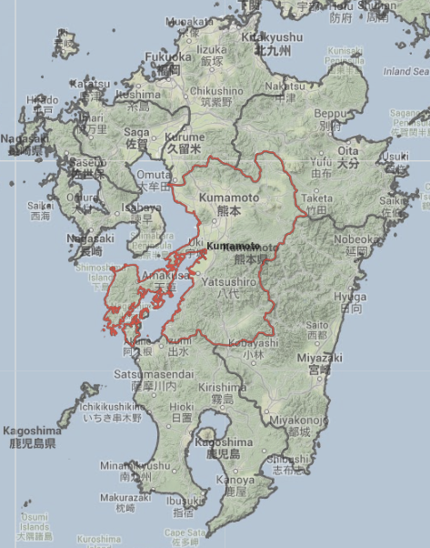
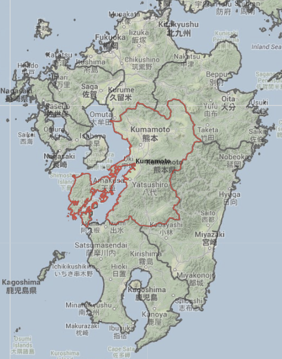

Selection of analytical units in map
This tool provides a possibility to select analytical units of interest directly in the map.
Press the button and the selection mode activates. The button changes as follows:

Select unit of interest by single clicking on it in the map when the selection mode is active.
 
 
The selected analytical unit is immediately highlighted by the current selection color and labeled in the map, in the tree of analytical units, and in all charts and tables in the chart panel.
For multiple selection, hold down the CTRL key during the selection.